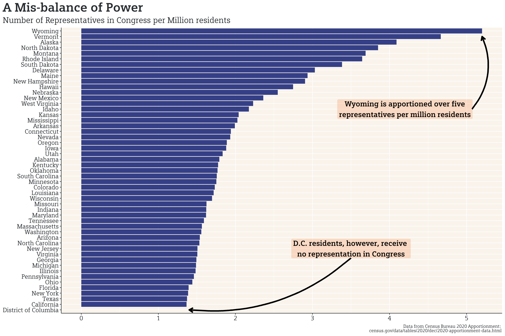

Once again, I’ll be keeping this very short, as I’ve continued to primarily focus on building out the demographic/economic database. I, did, however, sneak in some time to explore the 2020 Census Apportionment Results that were released yesterday. Some surprises came out of the release: Texas and Florida underperformed expectations, only gaining two and one seat, respectively; Arizona didn’t gain a seat; and New York lost a seat but was apparently 89 people short of retaining its seats. Given that Texas and Florida each gained one less seat than was generally expected, there’s been some speculation online that Donald Trump’s attempt to undercount Hispanics was successful, but backfired. I’ll hold my judgments on this theory until I can read some more in-depth opinions (if they get written).
With the new apportionment and population data, each individual’s representative power in congress has shifted. Including both Senators and House Representatives, states with smaller populations continue to have outsized representation in congress: Wyoming and Vermont have significantly more representatives per million residents than California or Texas, for example. Residents of Washington D.C., however, receive no representation in congress.

As a side note, the reps-per-million will be greater than the total number of congressional representatives in states with less than one million residents. This chart is really meant to compare the uneven representative power of each state.
If D.C. were to become a state, it would have outsized representative power, similar to Wyoming and Vermont, due to its size. That, however, isn’t really a justification to deny ~700,000 Americans national representation, and the arguments against D.C. statehood have been weak at best and implicitly racist at worst, given D.C.’s majority-minority population.
Still, it’s virtually impossible that D.C. statehood receive the filibuster-proof 60 votes in the Senate (I’d doubt that even a compromise of retrocession into Maryland would pass). For the time being, residents of D.C. will have to wait for representation until polarized ideological walls come down and Republicans vote for D.C. statehood, Democrats gain enough seats for a supermajority, or the filibuster is abolished.
As always, you can find my work on Github.